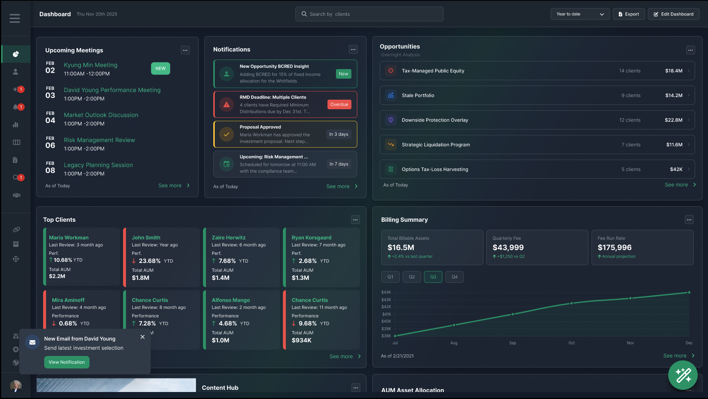
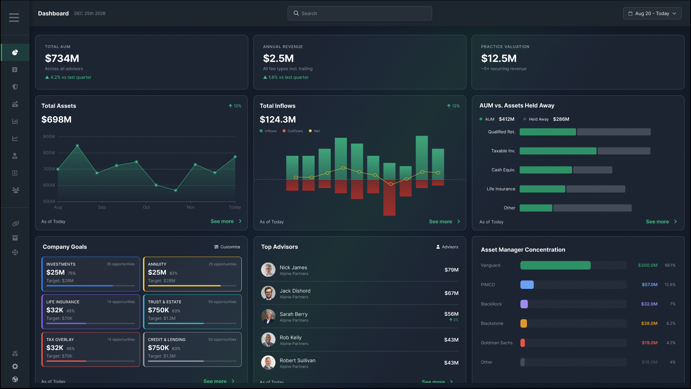
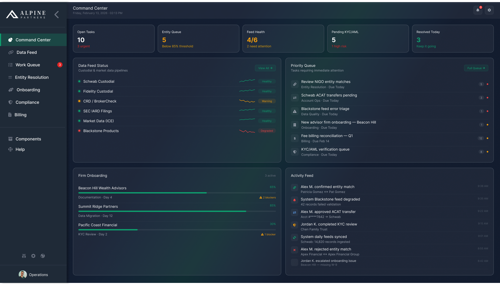

Advisor Dashboard
Better advice, private-market access, and AI-Core automation for client strategy and communications.

Firm Dashboard
Enterprise-level operating and balance-sheet intelligence — optimized for advisor and firm outcomes.

Operations Dashboard
A centralized command center for operations teams to monitor data feeds, manage work queues, and resolve entity discrepancies.